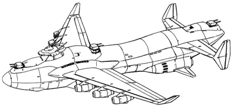
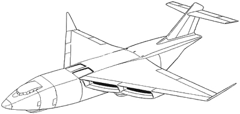
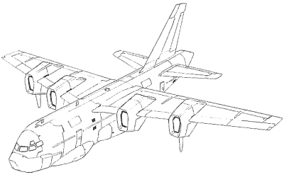
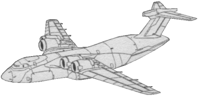

| Cargo Airliner |
|
|   |
|
General and Technical Data |
|
|
Unit Type: cargo airliner Operator: Many different parties Propulsion system: 4x jet engine Hangar capacity: 1 cargo, 2 mobile suits Launch catapults: 0 Fixed armaments: none Technical and Historical Notes A conventional cargo airliner, this aircraft, modeled after the old Russian AN-224, is capable of operating much like a Medea, without any armament and a reduced hangar capacity. Unfortunately, unlike the Medea it is unable to parachute its hangar compliment, having to land in order to disembark its mobile suits. |
 RPG quick stats sheet
RPG quick stats sheet